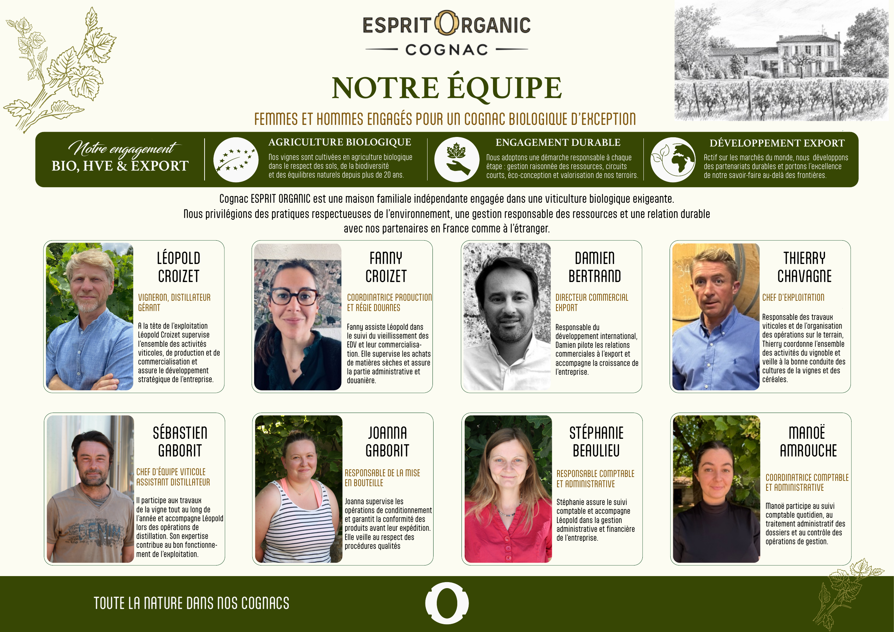

Notre équipe
Femmes et hommes engagés pour un Cognac biologique d’exception.
Cognac Esprit Organic est une maison familiale indépendante engagée dans une viticulture biologique exigeante.
- Léopold Croizet, vigneron, distillateur, gérant.
- Fanny Croizet, coordinatrice production et régie douanes.
- Damien Bertrand, directeur commercial export.
- Thierry Chavagne, chef d’exploitation.
- Sébastien Gaborit, chef d’équipe viticole assistant distillateur.
- Joanna Gaborit, responsable de la mise en bouteille.
- Stéphanie Beaulieu, responsable comptable et administrative.
- Manoé Amrouche, coordinatrice comptable et administrative.
